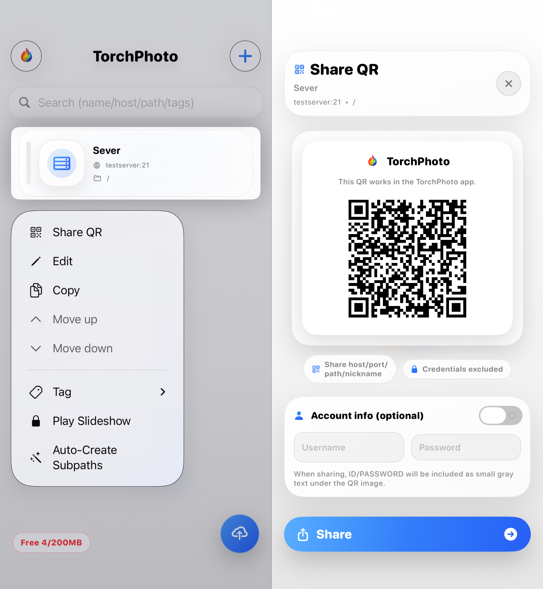

Support
QR Guide
Learn how to register a server using a shared QR image.
1. Register a Server from a Shared QR Image

How to Use a Shared QR Image
If someone shares a server QR as an image, you can scan that image in TorchPhoto and register the server without entering the details manually.
- Save the shared QR image to your device first
- Open TorchPhoto and go to the Add Server screen
- Select the option to scan a QR image from your photo library
- Choose the saved QR image
- Check the imported server information and save it